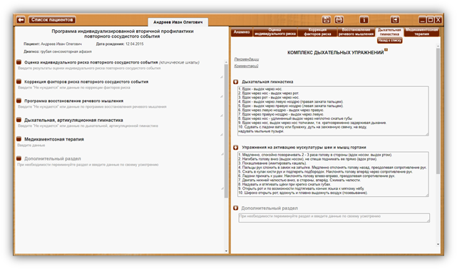

КОМПЛЕКС ДЫХАТЕЛЬНЫХ УПРАЖНЕНИЙ

 Кнопка
«Назад к списку» - для возврата к списку комплексов упражнений дыхательной,
артикуляционной гимнастики.
Кнопка
«Назад к списку» - для возврата к списку комплексов упражнений дыхательной,
артикуляционной гимнастики.
 Сноски на источник.
Сноски на источник.
При наведении курсора на сноску на источник, открывается окно с текстом – описанием источника. При уводе курсора окно закрывается. Ознакомится со всеми источниками можно в разделе 26. Список литературы.
 Рекомендации или Комментарий
Рекомендации или Комментарий
При клике по заголовку - ссылке «Комментарий» или «Рекомендации», открывается текст комментария или рекомендации соответственно (везде далее - аналогично).
КОМПЛЕКС ДЫХАТЕЛЬНЫХ УПРАЖНЕНИЙ 7
Рекомендации
Оптимальные условия для постановки дыхания создаются на занятиях в кабинете логопеда. В случае сосудистого характера основного заболевания дыхательные упражнения выполняются легко, без напряжения. Каждое упражнение повторяется 4-5 раз. Вдох должен быть коротким, а выдох длительным.7
Комментарий
Задачи проведения дыхательной гимнастики: дифференциация носового и ротового дыхания; формирование длительного ротового выдоха под контролем движений диафрагмы и мышц брюшного пресса; вырабатывание умения равномерного, ритмичного распределения воздуха в процессе речевой деятельности.
Дыхательные упражнения в остром периоде проводятся с учетом тяжести состояния больного и зависят от степени его психической активности. Применяются, как пассивные, так и активные приемы работы.
Нормализация дыхания в результате выполнения гимнастики улучшает функциональную деятельность всех органов и систем, активизирует механизмы саморегуляции.8
 Дыхательная гимнастика
Дыхательная гимнастика
|
1. Вдох - выдох через нос. 2. Вдох через нос - выдох через рот. 3. Вдох через рот - выдох через нос. 4. Вдох - выдох через левую ноздрю (правая зажата пальцем). 5. Вдох - выдох через правую ноздрю (левая зажата пальцем). 6. Вдох через левую ноздрю - выдох через правую. 7. Вдох через правую ноздрю - выдох через левую. 8. Вдох через нос - удлиненный выдох через неплотно сжатые губы 9. Вдох через нос, выдох через нос толчками, т.е. кратковременно задерживая дыхание. 10. Сдувать с ладони ватку или бумажку, дуть на зажженную свечку, на воду, надувать мыльные пузыри. |
Шаблон назначения упражнения.
В данном пред заполненном шаблоне внесены упражнения, с возможностью редактирования специалистом. Внесенные изменения сохраняются в качестве шаблона (отображаются в личных кабинетах всех пациентов) с возможностью дальнейшего редактирования.
При нажатии на кнопку «+», в раздел «Дыхательная, артикуляционная гимнастика» программы индивидуализированной вторичной профилактики повторного сосудистого события пациента, в личный кабинет которого осуществлен вход, вносятся:
Дата. Заголовок раздела (в данном примере «Дыхательная гимнастика»)
Содержимое шаблона.
 Активизация мускулатуры
шеи и мышц гортани
Активизация мускулатуры
шеи и мышц гортани
|
1. Медленно, спокойно поворачивать 2—3 раза голову в стороны (вдох носом. выдох ртом). 2. Нагибать голову вниз (выдох носом), не спеша поднимать ее прямо (вдох ртом). 3. Покашливание (имитировать кашель). 4. Пальцы рук сложить в замок на затылке. Медленно отклонять голову назад, преодолевая сопротивление рук. 5. Сжать в кулак кисти рук и подпереть подбородок. Наклонять голову вперёд через сопротивление рук. 6. Ладони прижать к ушам. Наклонять голову влево-вправо, преодолевая сопротивление рук. 7. Двигать нижней челюстью вниз, в стороны, вперёд. Сжимать челюсти. 8. Надувать и втягивать щёки при крепко сжатых губах. 9. Открыть рот и по возможности подтягивать кончик языка к мягкому нёбу. 10. Широко открыть рот, вдохнуть и плавно выдохнуть воздух (позевывание). |
 Дополнительный
раздел
Дополнительный
раздел
|
При необходимости переименуйте раздел и введите данные по своему усмотрению
|
Дополнительный раздел дает возможность изменить заголовок и создать дополнительный раздел на усмотрение специалиста.